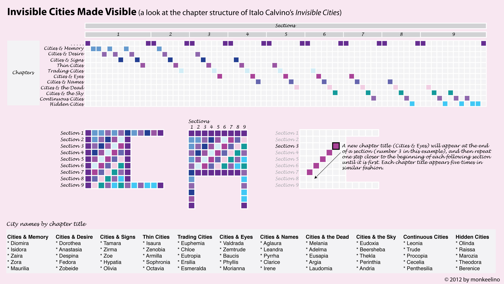

<!DOCTYPE html>
<html lang="en">

<head>
  <meta charset="UTF-8">
  <meta name="viewport" content="width=device-width, initial-scale=1.0">
  <title>invisible cities by italo calvino</title>
  <script src="https://unpkg.com/react@18/umd/react.development.js"></script>
  <script src="https://unpkg.com/react-dom@18/umd/react-dom.development.js"></script>
  <script src="https://unpkg.com/@babel/standalone/babel.min.js"></script>
  <!-- Supabase client for shared reader notes (optional — the app works without it). -->
  <script src="https://cdn.jsdelivr.net/npm/@supabase/supabase-js@2"></script>
  <link href="https://fonts.googleapis.com/css2?family=EB+Garamond:ital,wght@0,400;0,500;0,600;1,400;1,500&display=swap" rel="stylesheet" />
  <style>
    *{box-sizing:border-box}
    html,body{margin:0;padding:0}
    body{background:#f1ebdd;color:#2b2620;font-family:'EB Garamond',Georgia,serif;-webkit-font-smoothing:antialiased;text-rendering:optimizeLegibility}
    /* faint paper grain */
    body::before{content:'';position:fixed;inset:0;pointer-events:none;z-index:9998;opacity:.30;mix-blend-mode:multiply;background-image:url("data:image/svg+xml,%3Csvg xmlns='http://www.w3.org/2000/svg' width='140' height='140'%3E%3Cfilter id='n'%3E%3CfeTurbulence type='fractalNoise' baseFrequency='0.85' numOctaves='2' stitchTiles='stitch'/%3E%3C/filter%3E%3Crect width='100%25' height='100%25' filter='url(%23n)'/%3E%3C/svg%3E")}
    ::selection{background:rgba(58,74,110,.16)}
    ::-webkit-scrollbar{width:10px;height:10px}
    ::-webkit-scrollbar-thumb{background:#d8ccb4}
    ::-webkit-scrollbar-track{background:transparent}
    input,textarea{font-family:inherit}
    a{color:#3a4a6e}
    @keyframes ic-fade{from{opacity:0;transform:translateY(6px)}to{opacity:1;transform:none}}
  </style>
</head>

<body>
  <div id="root"></div>

  <script type="text/babel">
    // ============================================================================
    // Invisible Cities — a papery reading room.
    // Ported from the design-review build. Content lives in cities.json; this file
    // is only the reading interface. Appearance controls live in CONFIG below.
    // ============================================================================

    const CONFIG = {
      accentColor: '#3a4a6e', // indigo blue
      paperTone: 'Ivory',     // Ivory | Sand | Parchment
      showFolios: true,
      startView: 'read'       // read | overview
    };

    // ---------------------------------------------------------------------------
    // Shared reader notes (Supabase). Paste your project URL + anon/public key to
    // turn on public annotations. Leave blank and the app falls back to storing
    // notes in this browser only (localStorage) — the whole site still works.
    //
    // The anon key is SAFE to ship in the client: row-level security is what
    // protects the table. See SUPABASE.md for the exact SQL to run.
    // ---------------------------------------------------------------------------
    const SUPABASE_URL = 'https://tteijgqvqmxfgyrqtybb.supabase.co';
    const SUPABASE_ANON_KEY = 'sb_publishable_P8DGrxxyutW1wRm6qK45Ig_dYgX9d53'; // publishable key — safe to ship

    // Recommended: a Supabase Edge Function that moderates a note server-side
    // (free OpenAI check + word filter, API key kept secret) and inserts it with
    // the service role. When set, note submission goes through here — which is the
    // only way moderation can't be bypassed. Leave blank to insert directly with
    // the publishable key instead (client word filter only). See SUPABASE.md.
    // If you named the function something other than 'submit-note', edit the tail.
    const SUBMIT_ENDPOINT = SUPABASE_URL ? SUPABASE_URL + '/functions/v1/submit-note' : '';

    const supa = (SUPABASE_URL && SUPABASE_ANON_KEY && window.supabase)
      ? window.supabase.createClient(SUPABASE_URL, SUPABASE_ANON_KEY)
      : null;

    // Built-in hygiene: length cap + a small blocklist. Instant, no key required.
    const MAX_NOTE_LEN = 600;
    const BLOCKLIST = [
      'fuck', 'shit', 'bitch', 'cunt', 'asshole', 'dick', 'nigger', 'nigga',
      'faggot', 'retard', 'whore', 'slut', 'rape', 'kike', 'spic', 'chink'
    ];
    // Returns an error string if the note should be rejected, or null if it's clean.
    function screenNote(text) {
      const t = (text || '').trim();
      if (t.split(/\s+/).filter(Boolean).length < 5) return 'Please write at least five words.';
      if (t.length > MAX_NOTE_LEN) return `Please keep notes under ${MAX_NOTE_LEN} characters.`;
      const words = ' ' + t.toLowerCase().replace(/[^a-z0-9\s]/g, ' ').replace(/\s+/g, ' ') + ' ';
      for (const w of BLOCKLIST) { if (words.includes(' ' + w + ' ')) return 'That note tripped the language filter.'; }
      return null;
    }
    // Submit a note through the edge function: it moderates, then inserts as the
    // service role. Returns { ok, reason, row }. `row` is the created note record.
    async function submitNote(payload) {
      const res = await fetch(SUBMIT_ENDPOINT, {
        method: 'POST',
        headers: { 'Content-Type': 'application/json', apikey: SUPABASE_ANON_KEY, Authorization: 'Bearer ' + SUPABASE_ANON_KEY },
        body: JSON.stringify(payload)
      });
      let data = {};
      try { data = await res.json(); } catch (e) {}
      if (!res.ok || data.allowed === false) {
        return { ok: false, reason: data.reason || 'This note was flagged by moderation.' };
      }
      return { ok: true, row: data.note || null };
    }

    class InvisibleCities extends React.Component {
      constructor(props) {
        super(props);
        this.state = {
          loading: true, cities: [], interludes: [], categoryOrder: [], annotations: {}, overrides: {},
          view: 'read', selType: 'city', selId: null, mode: 'linear', search: '',
          annotating: false, activeAnn: null, showAuthor: true, showReaders: true, activeTag: null,
          showInterludes: true, sel: null, composerNote: '', composerTags: '', composerAuthor: '', ovHover: null,
          indexOpen: false, narrow: (typeof window !== 'undefined' && window.innerWidth < 900),
          noteError: null, noteBusy: false, remoteReady: false, communityAnchors: {}
        };
        this.config = CONFIG;
        this.readingRef = React.createRef();
      }

      // ---- lifecycle ----
      componentDidMount() {
        this._mu = (e) => this.onMouseUp(e);
        document.addEventListener('mouseup', this._mu);
        this._rs = () => this.setState({ narrow: window.innerWidth < 900 });
        window.addEventListener('resize', this._rs);
        this._pop = () => this.applyUrl();
        window.addEventListener('popstate', this._pop);

        fetch('./cities.json').then(r => r.json()).then(async data => {
          const anns = {};
          Object.entries(data.annotations || {}).forEach(([k, v]) => {
            anns[k] = { ...v, scope: v.scope || 'author', author: v.author || 'Claire' };
          });
          const cities = (data.cities || []).slice().sort((a, b) => (a.order || 0) - (b.order || 0));
          let communityAnchors = {};

          if (supa) {
            // Shared notes are the source of truth: pull every approved community note.
            try {
              const { data: rows, error } = await supa.from('notes').select().eq('status', 'approved');
              if (error) throw error;
              communityAnchors = this.mergeRemoteNotes(cities, anns, rows || []);
            } catch (e) { console.error('failed to load shared notes:', e); }
          } else {
            // Local-only fallback: this browser's drafted notes, from localStorage.
            let saved = [];
            try { saved = JSON.parse(localStorage.getItem('ic-community') || '[]'); } catch (e) {}
            saved.forEach(o => {
              if (!o || !o.id || !o.cityId) return;
              anns[o.id] = { note: o.note, color: 'gray', tags: o.tags || [], scope: 'community', author: o.author || 'you', anchor: o.anchor, cityId: o.cityId };
              (communityAnchors[o.cityId] = communityAnchors[o.cityId] || []).push({ id: o.id, anchor: o.anchor });
            });
          }

          // initial view / selection from URL (?view=, ?city=)
          const params = new URLSearchParams(window.location.search);
          const urlView = params.get('view');
          const urlCity = params.get('city');
          let view = (this.config.startView === 'overview') ? 'overview' : 'read';
          if (urlView === 'overview' || urlView === 'about' || urlView === 'read') view = urlView;
          let selId = cities.length ? cities[0].id : null;
          if (urlCity && cities.some(c => c.id === urlCity)) { selId = urlCity; view = 'read'; }

          this.setState({
            loading: false, cities, annotations: anns, communityAnchors, remoteReady: !!supa,
            interludes: data.interludes || [], categoryOrder: data.categoryOrder || [],
            view, selType: 'city', selId
          });
        }).catch(err => { console.error(err); this.setState({ loading: false }); });
      }

      // Register Supabase note rows as community annotations: metadata into `anns`
      // (mutated in place), and per-city {id, anchor} pairs into the returned map.
      // Nothing is injected into the text here — anchoring happens at render time
      // (buildReading), which is what lets notes overlap each other freely.
      mergeRemoteNotes(cities, anns, rows) {
        const byId = {}; cities.forEach(c => { byId[c.id] = c; });
        const existing = Object.keys(anns).map(k => parseInt(k.replace('annotation-', '')) || 0);
        let next = (existing.length ? Math.max(...existing) : 0) + 1;
        const communityAnchors = {};
        rows.forEach(row => {
          if (!byId[row.city_id]) return;
          const id = 'annotation-' + next++;
          anns[id] = {
            note: row.note, color: 'gray', tags: row.tags || [],
            scope: 'community', author: row.author || 'reader', anchor: row.anchor, cityId: row.city_id, remoteId: row.id
          };
          (communityAnchors[row.city_id] = communityAnchors[row.city_id] || []).push({ id, anchor: row.anchor });
        });
        return communityAnchors;
      }
      componentWillUnmount() {
        document.removeEventListener('mouseup', this._mu);
        window.removeEventListener('resize', this._rs);
        window.removeEventListener('popstate', this._pop);
      }

      // ---- url helpers ----
      applyUrl() {
        const params = new URLSearchParams(window.location.search);
        const city = params.get('city');
        const view = params.get('view');
        if (city && this.state.cities.some(c => c.id === city)) {
          this.setState({ view: 'read', selType: 'city', selId: city, activeAnn: null, sel: null });
        } else if (view === 'overview' || view === 'about' || view === 'read') {
          this.setState({ view });
        }
      }
      pushCityUrl(id) {
        const params = new URLSearchParams(window.location.search);
        params.delete('view');
        if (params.get('city') !== id) {
          params.set('city', id);
          window.history.pushState({ city: id }, '', `?${params.toString()}`);
        }
      }
      pushViewUrl(view) {
        const params = new URLSearchParams(window.location.search);
        params.delete('city');
        if (view === 'read') params.delete('view'); else params.set('view', view);
        const qs = params.toString();
        window.history.pushState({ view }, '', qs ? `?${qs}` : window.location.pathname);
      }

      // ---- small helpers ----
      acc() { return this.config.accentColor || '#3a4a6e'; }
      colorHex(c) {
        const m = { blue: '#4a5f7a', purple: '#6a5a7a', orange: '#9a6a3a', green: '#5a6e4a', red: '#7a3a30', yellow: '#8a7230', pink: '#8a4a5a', indigo: '#4a4a6e', cyan: '#3a6a6e', gray: '#6a6258', emerald: '#4a6e58' };
        return m[c] || '#6f6555';
      }
      hexA(hex, a) {
        const n = hex.replace('#', '');
        const r = parseInt(n.slice(0, 2), 16), g = parseInt(n.slice(2, 4), 16), b = parseInt(n.slice(4, 6), 16);
        return `rgba(${r},${g},${b},${a})`;
      }
      roman(n) { return ['', 'I', 'II', 'III', 'IV', 'V', 'VI', 'VII', 'VIII', 'IX'][n] || ''; }
      textOf(city) { return (this.state.overrides[city.id] != null) ? this.state.overrides[city.id] : city.text; }
      isVisible(ann) {
        if (!ann) return false;
        const s = this.state;
        const bySrc = ann.scope === 'community' ? s.showReaders : s.showAuthor;
        const byTag = !s.activeTag || (ann.tags || []).includes(s.activeTag);
        return bySrc && byTag;
      }
      clean(t) {
        return (t || '')
          .replace(/\[\/?annotation-\d+\]/g, '')
          .replace(/\*\*(.*?)\*\*/g, '$1')
          .replace(/\*(.*?)\*/g, '$1')
          .replace(/\[([^\]]+)\]\([^)]+\)/g, '$1')
          .replace(/\s+/g, ' ').trim();
      }
      genSeed(str) { let h = 2166136261; for (let i = 0; i < str.length; i++) { h ^= str.charCodeAt(i); h = Math.imul(h, 16777619); } return h >>> 0; }
      mulberry(a) { return function () { a |= 0; a = a + 0x6D2B79F5 | 0; let t = Math.imul(a ^ a >>> 15, 1 | a); t = t + Math.imul(t ^ t >>> 7, 61 | t) ^ t; return ((t ^ t >>> 14) >>> 0) / 4294967296; }; }

      // Procedural frontispiece: a seeded constellation of nodes + threads,
      // echoing Calvino's webs of relationships. Fills the gap where an
      // illustration is missing, so it reads as intentional, not broken.
      genPlate(c) {
        const rand = this.mulberry(this.genSeed(c.id + ':' + ((c.text || '').length)));
        const W = 400, H = 250, m = 38, ink = '#5b5140', thread = '#c7bb9e';
        const n = 7 + Math.floor(rand() * 6), pts = [];
        for (let i = 0; i < n; i++) pts.push({ x: m + rand() * (W - 2 * m), y: m + rand() * (H - 2 * m), r: 2 + rand() * 3 });
        const ch = [];
        for (let i = 0; i < n; i++) {
          let best = -1, bd = 1e9;
          for (let j = 0; j < n; j++) { if (i === j) continue; const d = (pts[i].x - pts[j].x) ** 2 + (pts[i].y - pts[j].y) ** 2; if (d < bd) { bd = d; best = j; } }
          if (best > i) ch.push(React.createElement('line', { key: 'e' + i, x1: pts[i].x, y1: pts[i].y, x2: pts[best].x, y2: pts[best].y, stroke: thread, strokeWidth: 1 }));
        }
        for (let k = 0; k < 3; k++) { const a = Math.floor(rand() * n), b = Math.floor(rand() * n); if (a !== b) ch.push(React.createElement('line', { key: 'r' + k, x1: pts[a].x, y1: pts[a].y, x2: pts[b].x, y2: pts[b].y, stroke: thread, strokeWidth: 1, opacity: 0.7 })); }
        const f = pts[0]; for (let r = 7; r <= 19; r += 6) ch.push(React.createElement('circle', { key: 'f' + r, cx: f.x, cy: f.y, r, fill: 'none', stroke: ink, strokeWidth: 1, opacity: 0.45 }));
        pts.forEach((p, i) => ch.push(React.createElement('circle', { key: 'n' + i, cx: p.x, cy: p.y, r: p.r, fill: '#f7f3e9', stroke: ink, strokeWidth: 1.2 })));
        const svg = React.createElement('svg', { viewBox: '0 0 ' + W + ' ' + H, width: '100%', style: { display: 'block' } }, ch);
        return React.createElement('figure', { style: { margin: '0 0 26px', border: '1px solid #d8ccb4', background: '#f5f1e6' } },
          svg,
          React.createElement('figcaption', { style: { fontFamily: "'Courier New',monospace", fontSize: '.72rem', color: '#928462', letterSpacing: '.06em', padding: '0 10px 8px' } }, 'frontispiece · generated from the text')
        );
      }

      // ---- text -> segments ----
      makeSeg(text, o) {
        o = o || {}; const style = {}; const acc = this.acc();
        if (o.strong) style.fontWeight = 600;
        if (o.em) style.fontStyle = 'italic';
        let onClick, onEnter;
        if (o.isAnno) {
          style.cursor = 'pointer';
          style.borderBottom = `1.5px ${o.active ? 'solid' : 'dotted'} ${o.colorHex}`;
          style.color = o.active ? o.colorHex : 'inherit';
          style.background = o.active ? this.hexA(o.colorHex, 0.12) : 'transparent';
          style.transition = 'background .2s, color .2s';
          onClick = () => this.setActive(o.annId);
          onEnter = () => { if (this.state.activeAnn !== o.annId) this.setActive(o.annId); };
        }
        if (o.link) { style.color = acc; style.textDecoration = 'underline'; style.textUnderlineOffset = '2px'; style.cursor = 'pointer'; onClick = () => window.open(o.link, '_blank', 'noopener'); }
        return { text, style, onClick, onEnter, hasNum: false, num: null, numStyle: {} };
      }
      pushText(segs, chunk, meta) {
        if (chunk == null || chunk === '') return;
        const re = /(\*\*[\s\S]*?\*\*|\*[\s\S]*?\*|\[[^\]]+\]\([^)]+\))/g;
        let last = 0, m;
        const add = (t, extra) => { if (t === '') return; segs.push(this.makeSeg(t, Object.assign({}, meta, extra))); };
        while ((m = re.exec(chunk))) {
          add(chunk.slice(last, m.index), {});
          const tok = m[0];
          if (tok.startsWith('**')) add(tok.slice(2, -2), { strong: true });
          else if (tok.startsWith('*')) add(tok.slice(1, -1), { em: true });
          else { const lm = tok.match(/^\[([^\]]+)\]\(([^)]+)\)$/); if (lm) add(lm[1], { link: lm[2] }); }
          last = re.lastIndex;
        }
        add(chunk.slice(last), {});
      }
      buildReading(city) {
        const anns = this.state.annotations;
        // Start from the author-annotated text, then weave in each visible community
        // note whose anchor doesn't overlap an existing highlight. Overlapping ones
        // are collected separately and shown in the margin with their quoted phrase.
        const comm = (this.state.communityAnchors[city.id] || []).filter(c => this.isVisible(anns[c.id]));
        let text = this.textOf(city);
        const injected = new Set();
        comm.forEach(c => {
          const woven = this.insertAnnSafe(text, c.anchor, c.id);
          if (woven) { text = woven; injected.add(c.id); }
        });

        const lines = text.split(/\n+/).map(l => l.replace(/\s+$/, '')).filter(l => l.trim().length);
        let counter = 0; const notes = [];
        const paras = lines.map(line => {
          const segs = [];
          line.split(/(\[annotation-\d+\][\s\S]*?\[\/annotation-\d+\])/).forEach(part => {
            const mm = part.match(/^\[annotation-(\d+)\]([\s\S]*?)\[\/annotation-\d+\]$/);
            if (mm) {
              const id = 'annotation-' + mm[1], content = mm[2], ann = anns[id];
              if (this.isVisible(ann)) {
                counter++; const colorHex = this.colorHex(ann.color); const active = this.state.activeAnn === id;
                const start = segs.length;
                this.pushText(segs, content, { isAnno: true, annId: id, colorHex, active });
                if (segs.length > start) {
                  segs[start].hasNum = true; segs[start].num = counter;
                  segs[start].numStyle = { fontFamily: "'Courier New',monospace", fontSize: '.6em', verticalAlign: 'super', marginLeft: '1px', color: colorHex, fontStyle: 'normal', fontWeight: 400 };
                }
                const nsegs = []; this.pushText(nsegs, ann.note, {});
                notes.push({ id, num: counter, segs: nsegs, tags: ann.tags || [], author: ann.author || (ann.scope === 'community' ? 'reader' : 'Claire'), isAuthor: ann.scope !== 'community', colorHex });
              } else { this.pushText(segs, content, {}); }
            } else { this.pushText(segs, part, {}); }
          });
          return { segs };
        });

        // Community notes that overlap an existing highlight: still shown in the
        // margin (with the phrase they refer to), just not underlined inline.
        comm.forEach(c => {
          if (injected.has(c.id)) return;
          const ann = anns[c.id]; if (!ann) return;
          const nsegs = []; this.pushText(nsegs, ann.note, {});
          notes.push({ id: c.id, num: '•', quote: c.anchor, segs: nsegs, tags: ann.tags || [], author: ann.author || 'reader', isAuthor: false, colorHex: this.colorHex(ann.color) });
        });
        return { paras, notes };
      }

      // ---- sequence / navigation ----
      sequence() {
        const s = this.state;
        const items = s.cities.map(c => ({ type: 'city', id: c.id, order: c.order }));
        if (s.showInterludes) { (s.interludes || []).forEach(it => items.push({ type: 'interlude', id: it.id, order: (it.afterOrder || 0) + 0.5 })); }
        return items.sort((a, b) => a.order - b.order);
      }
      curItem() {
        const s = this.state;
        if (s.selType === 'interlude') { const it = (s.interludes || []).find(x => x.id === s.selId); return it ? { type: 'interlude', data: it } : null; }
        const c = s.cities.find(x => x.id === s.selId); return c ? { type: 'city', data: c } : null;
      }
      step(dir) {
        const seq = this.sequence();
        const i = seq.findIndex(x => x.type === this.state.selType && x.id === this.state.selId);
        const j = i + dir; if (j < 0 || j >= seq.length) return;
        const t = seq[j];
        if (t.type === 'city') this.pushCityUrl(t.id);
        this.setState({ selType: t.type, selId: t.id, activeAnn: null, sel: null }, () => window.scrollTo({ top: 0, behavior: 'smooth' }));
      }
      seqLabel(dir) {
        const seq = this.sequence();
        const i = seq.findIndex(x => x.type === this.state.selType && x.id === this.state.selId);
        const j = i + dir; if (j < 0 || j >= seq.length) return null;
        const t = seq[j]; if (t.type === 'interlude') return 'Interlude';
        const c = this.state.cities.find(x => x.id === t.id); return c ? c.name : null;
      }

      // ---- actions ----
      select(type, id) {
        if (type === 'city') this.pushCityUrl(id);
        this.setState({ view: 'read', selType: type, selId: id, activeAnn: null, sel: null, indexOpen: false }, () => window.scrollTo({ top: 0, behavior: 'smooth' }));
      }
      setActive(id) { this.setState(s => ({ activeAnn: s.activeAnn === id ? null : id })); }
      setView(v) { this.pushViewUrl(v); this.setState({ view: v, sel: null }); }
      toggleAnnotate() { this.setState(s => ({ annotating: !s.annotating, sel: null, view: 'read' })); }

      onMouseUp() {
        if (!this.state.annotating) return;
        const sel = window.getSelection(); if (!sel || sel.isCollapsed) return;
        const text = sel.toString().trim(); if (text.length < 2) return;
        const el = this.readingRef.current; if (!el) return;
        const range = sel.getRangeAt(0); if (!el.contains(range.commonAncestorContainer)) return;
        const r = range.getBoundingClientRect();
        this.setState({ sel: { text, x: r.left + r.width / 2, y: r.bottom } });
      }
      insertAnn(text, quote, id) {
        const cleanFull = text.replace(/\[annotation-\d+\](.*?)\[\/annotation-\d+\]/g, '$1');
        const start = cleanFull.indexOf(quote); if (start === -1) return text;
        const end = start + quote.length; let os = 0, oe = 0, cp = 0, op = 0;
        while (op < text.length && cp <= end) {
          const o = text.substr(op);
          const mo = o.match(/^\[annotation-\d+\]/), mc = o.match(/^\[\/annotation-\d+\]/);
          if (mo) op += mo[0].length; else if (mc) op += mc[0].length;
          else { if (cp === start) os = op; if (cp === end) { oe = op; break; } cp++; op++; }
        }
        if (cp === end && oe === 0) oe = op;
        return text.slice(0, os) + `[${id}]` + text.slice(os, oe) + `[/${id}]` + text.slice(oe);
      }
      // Wrap `quote` with annotation markup only if it does not overlap any existing
      // annotation span (nested markup would break the non-nesting parser). Returns
      // the new text, or null if the quote is missing or overlaps — in which case the
      // caller shows the note in the margin instead of highlighting it inline.
      insertAnnSafe(text, quote, id) {
        const re = /\[annotation-\d+\]|\[\/annotation-\d+\]|[\s\S]/g;
        let m, depth = 0, clean = '';
        const covered = [];
        while ((m = re.exec(text))) {
          const tok = m[0];
          if (/^\[annotation-\d+\]$/.test(tok)) { depth++; continue; }
          if (/^\[\/annotation-\d+\]$/.test(tok)) { depth = Math.max(0, depth - 1); continue; }
          clean += tok; covered.push(depth > 0);
        }
        const start = clean.indexOf(quote); if (start === -1) return null;
        const end = start + quote.length;
        for (let k = start; k < end; k++) { if (covered[k]) return null; }
        return this.insertAnn(text, quote, id);
      }
      async saveNote() {
        const s = this.state; if (s.noteBusy || !s.sel || !s.composerNote.trim()) return;
        const city = s.cities.find(c => c.id === s.selId); if (!city) return;
        const note = s.composerNote.trim();
        const tags = s.composerTags.split(',').map(t => t.trim()).filter(Boolean);

        // Hygiene: instant word/length filter, then the optional server-side LLM gate.
        const localErr = screenNote(note);
        if (localErr) { this.setState({ noteError: localErr }); return; }

        const ids = Object.keys(s.annotations).map(k => parseInt(k.replace('annotation-', '')) || 0);
        const id = 'annotation-' + ((ids.length ? Math.max(...ids) : 0) + 1);
        const anchor = s.sel.text;
        const author = s.composerAuthor.trim().slice(0, 40) || 'reader';
        const payload = { city_id: city.id, anchor, note, tags, author };

        // Add the note as a render-time community anchor (no text mutation, so it can
        // overlap other notes). `row` is the persisted DB row when there is one.
        const add = (row) => {
          const ann = { note, color: 'gray', tags, scope: 'community', author: (row && row.author) || author, anchor, cityId: city.id, remoteId: row && row.id };
          const annotations = Object.assign({}, s.annotations, { [id]: ann });
          const list = (s.communityAnchors[city.id] || []).concat([{ id, anchor }]);
          const communityAnchors = Object.assign({}, s.communityAnchors, { [city.id]: list });
          if (!supa) this.persistCommunity(annotations, communityAnchors);
          this.setState({ annotations, communityAnchors, sel: null, composerNote: '', composerTags: '', composerAuthor: '', activeAnn: id, noteBusy: false, noteError: null });
        };

        if (SUBMIT_ENDPOINT) {
          // Preferred path: moderate + insert server-side (bypass-proof).
          this.setState({ noteBusy: true, noteError: null });
          try {
            const res = await submitNote(payload);
            if (!res.ok) { this.setState({ noteBusy: false, noteError: res.reason }); return; }
            add(res.row);
          } catch (e) { this.setState({ noteBusy: false, noteError: 'Could not reach the server — please try again.' }); }
          return;
        }

        if (supa) {
          // No edge function: insert directly with the publishable key. Requires the
          // table's insert policy to allow status='approved'.
          this.setState({ noteBusy: true, noteError: null });
          const { data, error } = await supa.from('notes').insert(Object.assign({}, payload, { status: 'approved' })).select().single();
          if (error) { this.setState({ noteBusy: false, noteError: 'Could not post note — please try again.' }); return; }
          add(data);
          return;
        }

        // Local-only fallback (no Supabase configured): keep the note in this browser.
        add(null);
      }
      // Serialize all community notes (across cities) to localStorage for the offline path.
      persistCommunity(annotations, communityAnchors) {
        const arr = [];
        Object.entries(communityAnchors).forEach(([cityId, list]) => list.forEach(({ id, anchor }) => {
          const a = annotations[id]; if (a) arr.push({ id, cityId, anchor, note: a.note, tags: a.tags, author: a.author });
        }));
        try { localStorage.setItem('ic-community', JSON.stringify(arr)); } catch (e) {}
      }

      // ---- compute render values ----
      renderVals() {
        const s = this.state, acc = this.acc();
        const tones = { Ivory: '#f9f7f1', Sand: '#f2eee2', Parchment: '#ece1c9' };
        const paper = tones[this.config.paperTone] || '#f9f7f1';
        if (s.loading) return { loading: true, ready: false, acc, rootStyle: { minHeight: '100vh', background: paper } };

        const navBase = { cursor: 'pointer', color: '#5f5647', transition: 'color .2s', paddingBottom: '2px', borderBottom: '2px solid transparent' };
        const navOn = { cursor: 'pointer', color: acc, paddingBottom: '2px', borderBottom: '2px solid ' + acc };
        const isRead = s.view === 'read', isOverview = s.view === 'overview', isAbout = s.view === 'about';
        const item = this.curItem();
        const isCity = isRead && item && item.type === 'city';
        const isInterlude = isRead && item && item.type === 'interlude';

        // reading content
        let paras = [], notes = [], cur = {}, interParas = [];
        if (isCity) {
          const c = item.data; const built = this.buildReading(c);
          paras = built.paras; notes = built.notes;
          const hasImage = !!c.image;
          const figureEl = hasImage ? React.createElement('figure', { style: { margin: '0 0 26px' } },
            React.createElement('img', { src: c.image, alt: c.name, style: { width: '100%', display: 'block', border: '1px solid #d8ccb4', filter: 'sepia(.12) saturate(.92)' } }),
            React.createElement('figcaption', { style: { fontFamily: "'Courier New',monospace", fontSize: '.74rem', color: '#7a6f58', marginTop: '6px' } }, 'sourced illustration — see the atlas for credits')
          ) : this.genPlate(c);
          cur = { name: c.name, category: c.category, roman: 'Chapter ' + this.roman(c.chapter), folio: String(c.order).padStart(2, '0'), hasImage, image: c.image || '', figureEl };
        } else if (isInterlude) {
          const it = item.data; interParas = (it.text || '').split(/\n+/).map(x => x.trim()).filter(Boolean);
          cur = { name: (it.kind === 'opening' ? 'Opening dialogue' : 'Closing dialogue'), roman: 'Chapter ' + this.roman(it.chapter) };
        }

        // margin notes styled
        const marginNotes = notes.map(n => ({
          id: n.id, num: n.num, quote: n.quote, segs: n.segs, tags: n.tags, author: n.author || (n.isAuthor ? 'Claire' : 'reader'),
          numStyle: { fontFamily: "'Courier New',monospace", fontSize: '.78rem', color: n.colorHex, minWidth: '16px', fontWeight: 600 },
          badgeStyle: { fontVariant: 'small-caps', letterSpacing: '.06em', fontSize: '.72rem', padding: '1px 6px', border: '1px solid ' + (n.isAuthor ? this.hexA(acc, .4) : '#d8ccb4'), color: n.isAuthor ? acc : '#7a6f58', background: n.isAuthor ? this.hexA(acc, .05) : 'transparent' },
          style: { cursor: 'pointer', padding: '11px 12px', marginBottom: '10px', background: s.activeAnn === n.id ? '#f7f2e6' : 'transparent', borderLeft: '2px solid ' + (s.activeAnn === n.id ? n.colorHex : '#e2d7c1'), transition: 'background .2s,border-color .2s' },
          select: () => this.setActive(n.id), hover: () => { if (s.activeAnn !== n.id) this.setActive(n.id); }
        }));

        // tag filter list (from current city notes)
        const tagSet = []; notes.forEach(n => n.tags.forEach(t => { if (!tagSet.includes(t)) tagSet.push(t); }));
        const chip = (on) => ({ cursor: 'pointer', fontVariant: 'small-caps', letterSpacing: '.05em', fontSize: '.8rem', padding: '2px 9px', border: '1px solid ' + (on ? acc : '#d8ccb4'), color: on ? '#faf6ec' : '#6f6555', background: on ? acc : 'transparent', transition: 'all .15s' });
        const tagList = tagSet.map(t => ({ label: t, style: chip(s.activeTag === t), select: () => this.setState(st => ({ activeTag: st.activeTag === t ? null : t })) }));

        // index groups
        let indexGroups = [];
        const showFolios = this.config.showFolios !== false;
        const q = s.search.trim().toLowerCase();
        const match = (c) => !q || c.name.toLowerCase().includes(q) || c.category.toLowerCase().includes(q) || (c.tags || []).some(t => t.toLowerCase().includes(q));
        const cityRow = (c) => ({
          key: 'c-' + c.id, name: c.name, folio: String(c.order).padStart(2, '0'), isCity: true, isInterlude: false,
          folioStyle: { fontFamily: "'Courier New',monospace", fontSize: '.76rem', color: '#928462', minWidth: '18px', display: showFolios ? 'inline' : 'none' },
          style: { display: 'flex', gap: '9px', alignItems: 'baseline', cursor: 'pointer', padding: '4px 8px', margin: '0 -8px', background: (s.selType === 'city' && s.selId === c.id) ? '#f7f2e6' : 'transparent', borderLeft: '2px solid ' + ((s.selType === 'city' && s.selId === c.id) ? acc : 'transparent'), color: (s.selType === 'city' && s.selId === c.id) ? acc : '#2b2620', transition: 'all .15s' },
          select: () => this.select('city', c.id)
        });
        const intRow = (it) => ({
          key: 'i-' + it.id, name: (it.kind === 'opening' ? 'opening dialogue' : 'closing dialogue'), isCity: false, isInterlude: true,
          style: { display: 'flex', gap: '7px', alignItems: 'baseline', cursor: 'pointer', padding: '3px 8px', margin: '0 -8px', background: (s.selType === 'interlude' && s.selId === it.id) ? '#f7f2e6' : 'transparent', borderLeft: '2px solid ' + ((s.selType === 'interlude' && s.selId === it.id) ? acc : 'transparent'), color: '#756b53', transition: 'all .15s' },
          select: () => this.select('interlude', it.id)
        });
        if (s.mode === 'linear') {
          for (let ch = 1; ch <= 9; ch++) {
            const items = [];
            (s.interludes || []).filter(it => it.chapter === ch && it.kind === 'opening' && s.showInterludes).forEach(it => items.push(intRow(it)));
            s.cities.filter(c => c.chapter === ch && match(c)).forEach(c => items.push(cityRow(c)));
            (s.interludes || []).filter(it => it.chapter === ch && it.kind === 'closing' && s.showInterludes).forEach(it => items.push(intRow(it)));
            if (items.length) indexGroups.push({ key: 'ch-' + ch, label: 'Chapter', roman: this.roman(ch), items });
          }
        } else {
          s.categoryOrder.forEach(cat => {
            const items = s.cities.filter(c => c.category === cat && match(c)).map(cityRow);
            if (items.length) indexGroups.push({ key: 'cat-' + cat, label: cat.replace('Cities & ', '& ').replace('Cities ', ''), roman: '', items });
          });
        }

        // overview / atlas
        let ovGroups = [];
        if (isOverview) {
          ovGroups = s.categoryOrder.map(cat => {
            const list = s.cities.filter(c => c.category === cat);
            return {
              key: cat, category: cat, countLabel: list.length + ' cities', cities: list.map(c => ({
                key: c.id, name: c.name, folio: String(c.order).padStart(2, '0'), preview: this.clean(c.text).slice(0, 118) + '…',
                style: { cursor: 'pointer', padding: '14px 15px', border: '1px solid ' + (s.ovHover === c.id ? '#c9ba9c' : '#e2d7c1'), background: s.ovHover === c.id ? '#f7f2e6' : '#f9f5ea', transition: 'all .18s', boxShadow: s.ovHover === c.id ? '0 4px 14px rgba(0,0,0,.05)' : 'none' },
                select: () => this.select('city', c.id), hover: () => this.setState({ ovHover: c.id }), unhover: () => this.setState({ ovHover: null })
              }))
            };
          }).filter(g => g.cities.length);
        }

        // composer position
        let composerStyle = {}, quotePreview = '';
        const showComposer = s.annotating && !!s.sel;
        if (s.sel) {
          quotePreview = s.sel.text.length > 90 ? s.sel.text.slice(0, 90) + '…' : s.sel.text;
          const left = Math.max(16, Math.min(s.sel.x - 160, window.innerWidth - 336));
          const top = Math.min(s.sel.y + 12, window.innerHeight - 260);
          composerStyle = { position: 'fixed', left: left + 'px', top: top + 'px', width: '320px', zIndex: 9999, background: '#faf6ec', border: '1px solid #cdbfa4', boxShadow: '0 10px 40px rgba(43,38,32,.22)', padding: '15px 16px', animation: 'ic-fade .18s ease' };
        }

        return {
          loading: false, ready: true, acc, paper,
          rootStyle: { minHeight: '100vh', background: paper },
          narrow: s.narrow, indexOpen: s.indexOpen,
          toggleIndex: () => this.setState(st => ({ indexOpen: !st.indexOpen })),
          goHome: () => this.setView('read'), goRead: () => this.setView('read'), goOverview: () => this.setView('overview'), goAbout: () => this.setView('about'),
          toggleAnnotate: () => this.toggleAnnotate(), annotating: s.annotating, notAnnotating: !s.annotating, sharedNotes: !!supa,
          annotateLabel: s.annotating ? '✓ annotating' : 'annotate',
          readNavStyle: isRead ? navOn : navBase, ovNavStyle: isOverview ? navOn : navBase,
          aboutNavStyle: isAbout ? navOn : navBase, annNavStyle: s.annotating ? navOn : navBase,
          isRead, isOverview, isAbout, isCity, isInterlude,
          setLinear: () => this.setState({ mode: 'linear' }), setTheme: () => this.setState({ mode: 'theme' }),
          modeLinearStyle: { cursor: 'pointer', whiteSpace: 'nowrap', padding: '6px 14px', fontVariant: 'small-caps', letterSpacing: '.06em', fontSize: '.86rem', background: s.mode === 'linear' ? acc : 'transparent', color: s.mode === 'linear' ? '#faf6ec' : '#6f6555', transition: 'all .15s' },
          modeThemeStyle: { cursor: 'pointer', whiteSpace: 'nowrap', padding: '6px 14px', fontVariant: 'small-caps', letterSpacing: '.06em', fontSize: '.86rem', background: s.mode === 'theme' ? acc : 'transparent', color: s.mode === 'theme' ? '#faf6ec' : '#6f6555', transition: 'all .15s' },
          search: s.search, onSearch: (e) => this.setState({ search: e.target.value }),
          indexGroups, cur, paras, interParas, interEmpty: isInterlude && interParas.length === 0, readingRef: this.readingRef,
          marginNotes, noNotes: isCity && marginNotes.length === 0, noteCountLabel: marginNotes.length ? (marginNotes.length + ' notes') : '—',
          toggleAuthor: () => this.setState(st => ({ showAuthor: !st.showAuthor })), toggleReaders: () => this.setState(st => ({ showReaders: !st.showReaders })),
          authorChipStyle: chip(s.showAuthor), readersChipStyle: chip(s.showReaders), tagList,
          goPrev: () => this.step(-1), goNext: () => this.step(1),
          prevLabel: this.seqLabel(-1) || '', nextLabel: this.seqLabel(1) || '',
          prevStyle: { cursor: this.seqLabel(-1) ? 'pointer' : 'default', visibility: this.seqLabel(-1) ? 'visible' : 'hidden', fontStyle: 'italic', color: '#6f6555', fontSize: '1.05rem' },
          nextStyle: { cursor: this.seqLabel(1) ? 'pointer' : 'default', visibility: this.seqLabel(1) ? 'visible' : 'hidden', fontStyle: 'italic', color: '#6f6555', fontSize: '1.05rem' },
          ovGroups,
          showComposer, composerStyle, quotePreview,
          composerNote: s.composerNote, composerTags: s.composerTags, composerAuthor: s.composerAuthor,
          composerShared: !!supa, composerError: s.noteError, composerBusy: s.noteBusy,
          composerSaveLabel: s.noteBusy ? 'posting…' : (supa ? 'post note' : 'pin note'),
          onComposerNote: (e) => this.setState({ composerNote: e.target.value, noteError: null }), onComposerTags: (e) => this.setState({ composerTags: e.target.value }),
          onComposerAuthor: (e) => this.setState({ composerAuthor: e.target.value }),
          saveNote: () => this.saveNote(), cancelNote: () => this.setState({ sel: null, composerNote: '', composerTags: '', composerAuthor: '', noteError: null, noteBusy: false })
        };
      }

      // ---- render ----
      render() {
        const v = this.renderVals();
        if (v.loading) {
          return (
            <div style={v.rootStyle}>
              <div style={{ minHeight: '100vh', display: 'flex', alignItems: 'center', justifyContent: 'center', color: '#7a6f58', fontStyle: 'italic', fontSize: '1.25rem' }}>opening the book…</div>
            </div>
          );
        }
        const narrow = v.narrow;
        const container = { maxWidth: '1180px', margin: '0 auto', padding: narrow ? '22px 18px 80px' : '34px 30px 96px' };

        // ---- reading layout columns ----
        const readCols = narrow ? '1fr' : '230px minmax(0,1fr)';
        const cityCols = narrow ? '1fr' : 'minmax(0,1fr) 248px';

        return (
          <div style={v.rootStyle}>
            <div style={container}>

              {/* header */}
              <header style={{ display: 'flex', justifyContent: 'space-between', alignItems: 'flex-end', borderBottom: '1px solid #ddd0b8', paddingBottom: '16px', marginBottom: '22px', gap: '16px', flexWrap: 'wrap' }}>
                <div onClick={v.goHome} style={{ cursor: 'pointer' }}>
                  <div style={{ fontVariant: 'small-caps', letterSpacing: '.16em', fontSize: '.78rem', color: '#7a6f58', marginBottom: '1px' }}>Italo Calvino</div>
                  <div style={{ fontSize: narrow ? '1.7rem' : '2.1rem', fontWeight: 500, fontStyle: 'italic', letterSpacing: '.01em', lineHeight: 1 }}>Invisible Cities</div>
                </div>
                <nav style={{ display: 'flex', gap: narrow ? '16px' : '26px', alignItems: 'center', fontVariant: 'small-caps', letterSpacing: '.09em', fontSize: narrow ? '1rem' : '1.14rem' }}>
                  <span onClick={v.goRead} style={v.readNavStyle}>the cities</span>
                  <span onClick={v.goOverview} style={v.ovNavStyle}>the atlas</span>
                  <span onClick={v.goAbout} style={v.aboutNavStyle}>about</span>
                  <span onClick={v.toggleAnnotate} style={v.annNavStyle}>{v.annotateLabel}</span>
                </nav>
              </header>

              {/* annotate banner */}
              {v.annotating && (
                <div style={{ marginBottom: '20px', padding: '11px 16px', border: '1px solid #d8ccb4', background: '#f7f2e6', fontSize: '.95rem', color: '#6f6555', display: 'flex', justifyContent: 'space-between', alignItems: 'center', gap: '16px', animation: 'ic-fade .25s ease' }}>
                  <span><em style={{ color: v.acc }}>Marginalia mode.</em>&nbsp; Select any passage to leave a note in the margin. Reader notes are saved to this browser.</span>
                  <span onClick={v.toggleAnnotate} style={{ cursor: 'pointer', fontVariant: 'small-caps', letterSpacing: '.08em', color: v.acc, whiteSpace: 'nowrap' }}>done ×</span>
                </div>
              )}

              {/* ============ READING VIEW ============ */}
              {v.isRead && (
                <div>
                  <div style={{ display: 'flex', justifyContent: 'space-between', alignItems: 'center', gap: '20px', marginBottom: '22px', flexWrap: 'wrap' }}>
                    <div style={{ display: 'flex', flex: '0 0 auto', border: '1px solid #d8ccb4', background: '#f7f2e6' }}>
                      <span onClick={v.setLinear} style={v.modeLinearStyle}>reading order</span>
                      <span onClick={v.setTheme} style={v.modeThemeStyle}>by theme</span>
                    </div>
                    <input type="text" value={v.search} onChange={v.onSearch} placeholder="search cities, themes, tags…" style={{ flex: 1, minWidth: '180px', maxWidth: '340px', padding: '8px 12px', border: '1px solid #d8ccb4', background: '#faf6ec', fontSize: '1rem', color: '#2b2620', outline: 'none' }} />
                  </div>

                  {/* narrow: contents toggle */}
                  {narrow && (
                    <div style={{ marginBottom: '16px' }}>
                      <span onClick={v.toggleIndex} style={{ cursor: 'pointer', display: 'inline-block', padding: '7px 14px', border: '1px solid #d8ccb4', background: '#f7f2e6', fontVariant: 'small-caps', letterSpacing: '.08em', fontSize: '.86rem', color: '#6f6555' }}>
                        {v.indexOpen ? 'hide contents ×' : '☰ contents'}
                      </span>
                    </div>
                  )}

                  <div style={{ display: 'grid', gridTemplateColumns: readCols, gap: narrow ? '0' : '40px', alignItems: 'start' }}>

                    {/* INDEX */}
                    {(!narrow || v.indexOpen) && (
                      <aside style={narrow
                        ? { marginBottom: '28px', paddingBottom: '20px', borderBottom: '1px solid #ddd0b8' }
                        : { position: 'sticky', top: '22px', maxHeight: 'calc(100vh - 44px)', overflowY: 'auto', overflowX: 'hidden', paddingRight: '6px' }}>
                        {v.indexGroups.map(grp => (
                          <div key={grp.key} style={{ marginBottom: '20px' }}>
                            <div style={{ display: 'flex', alignItems: 'baseline', gap: '8px', marginBottom: '8px', paddingBottom: '5px', borderBottom: '1px solid #e2d7c1' }}>
                              <span style={{ fontFamily: "'Courier New',monospace", fontSize: '.78rem', color: v.acc }}>{grp.roman}</span>
                              <span style={{ fontVariant: 'small-caps', letterSpacing: '.09em', fontSize: '.82rem', color: '#6f6555' }}>{grp.label}</span>
                            </div>
                            {grp.items.map(it => (
                              <div key={it.key} onClick={it.select} style={it.style}>
                                {it.isInterlude && <span style={{ color: v.acc, fontSize: '.8rem' }}>❧</span>}
                                {it.isInterlude && <span style={{ fontStyle: 'italic', fontSize: '.92rem' }}>{it.name}</span>}
                                {it.isCity && <span style={it.folioStyle}>{it.folio}</span>}
                                {it.isCity && <span style={{ fontSize: '1.02rem' }}>{it.name}</span>}
                              </div>
                            ))}
                          </div>
                        ))}
                      </aside>
                    )}

                    {/* READING PANE */}
                    <div>
                      {/* CITY */}
                      {v.isCity && (
                        <div style={{ display: 'grid', gridTemplateColumns: cityCols, gap: narrow ? '30px' : '40px', alignItems: 'start' }}>
                          <article ref={v.readingRef}>
                            <div style={{ fontVariant: 'small-caps', letterSpacing: '.12em', fontSize: '.78rem', color: v.acc, marginBottom: '6px' }}>{v.cur.category} · {v.cur.roman}</div>
                            <h2 style={{ margin: '0 0 2px', fontSize: narrow ? '2rem' : '2.5rem', fontWeight: 500, fontStyle: 'italic', letterSpacing: '.01em' }}>{v.cur.name}</h2>
                            <div style={{ fontFamily: "'Courier New',monospace", fontSize: '.8rem', color: '#7a6f58', marginBottom: '26px' }}>city № {v.cur.folio} of 55</div>

                            {v.cur.figureEl}

                            <div style={{ fontSize: narrow ? '1.16rem' : '1.28rem', lineHeight: 1.78, color: '#2b2620' }}>
                              {v.paras.map((para, i) => (
                                <p key={i} style={{ margin: '0 0 1.15em', textWrap: 'pretty' }}>
                                  {para.segs.map((seg, j) => (
                                    <span key={j} style={seg.style} onClick={seg.onClick} onMouseEnter={seg.onEnter}>
                                      {seg.text}{seg.hasNum && <sup style={seg.numStyle}>{seg.num}</sup>}
                                    </span>
                                  ))}
                                </p>
                              ))}
                            </div>

                            <div style={{ display: 'flex', justifyContent: 'space-between', gap: '16px', marginTop: '44px', paddingTop: '18px', borderTop: '1px solid #ddd0b8' }}>
                              <span onClick={v.goPrev} style={v.prevStyle}>‹ {v.prevLabel}</span>
                              <span onClick={v.goNext} style={v.nextStyle}>{v.nextLabel} ›</span>
                            </div>
                          </article>

                          {/* MARGIN RAIL */}
                          <aside style={narrow ? {} : { position: 'sticky', top: '22px' }}>
                            <div style={{ display: 'flex', alignItems: 'baseline', justifyContent: 'space-between', borderBottom: '1px solid #ddd0b8', paddingBottom: '6px', marginBottom: '12px' }}>
                              <span style={{ fontVariant: 'small-caps', letterSpacing: '.12em', fontSize: '.8rem', color: '#6f6555' }}>Marginalia</span>
                              <span style={{ fontFamily: "'Courier New',monospace", fontSize: '.76rem', color: '#7a6f58' }}>{v.noteCountLabel}</span>
                            </div>
                            <div style={{ display: 'flex', flexWrap: 'wrap', gap: '6px', marginBottom: '16px' }}>
                              <span onClick={v.toggleAuthor} style={v.authorChipStyle}>Claire's</span>
                              <span onClick={v.toggleReaders} style={v.readersChipStyle}>readers</span>
                              {v.tagList.map((tg, i) => (
                                <span key={i} onClick={tg.select} style={tg.style}>{tg.label}</span>
                              ))}
                            </div>
                            {v.marginNotes.map(note => (
                              <div key={note.id} onClick={note.select} onMouseEnter={note.hover} style={note.style}>
                                <div style={{ display: 'flex', gap: '8px', alignItems: 'baseline' }}>
                                  <span style={note.numStyle}>{note.num}</span>
                                  <div style={{ flex: 1 }}>
                                    {note.quote && (
                                      <div style={{ fontStyle: 'italic', color: '#6f6555', fontSize: '.84rem', lineHeight: 1.35, marginBottom: '4px' }}>“{note.quote}”</div>
                                    )}
                                    <div style={{ fontSize: '1rem', lineHeight: 1.5, color: '#3a342b' }}>
                                      {note.segs.map((ns, i) => (
                                        <span key={i} style={ns.style} onClick={ns.onClick}>{ns.text}</span>
                                      ))}
                                    </div>
                                    <div style={{ display: 'flex', alignItems: 'center', gap: '6px', marginTop: '7px', flexWrap: 'wrap' }}>
                                      <span style={note.badgeStyle}>{note.author}</span>
                                      {note.tags.map((t2, i) => (
                                        <span key={i} style={{ fontFamily: "'Courier New',monospace", fontSize: '.62rem', color: '#7a6f58', letterSpacing: '.04em' }}>#{t2}</span>
                                      ))}
                                    </div>
                                  </div>
                                </div>
                              </div>
                            ))}
                            {v.noNotes && (
                              <div style={{ fontStyle: 'italic', color: '#928462', fontSize: '.98rem', lineHeight: 1.5, marginBottom: '2px' }}>
                                No notes on this city yet — be the first.
                              </div>
                            )}
                            {/* invitation to annotate — always shown in the reading rail */}
                            <div style={{ marginTop: v.noNotes ? '14px' : '18px', paddingTop: '12px', borderTop: '1px solid #e2d7c1' }}>
                              {v.annotating ? (
                                <div style={{ fontStyle: 'italic', color: '#756b53', fontSize: '.9rem', lineHeight: 1.5 }}>
                                  Select any passage in the text to leave your note.
                                </div>
                              ) : (
                                <div onClick={v.toggleAnnotate} style={{ cursor: 'pointer', lineHeight: 1.45 }}>
                                  <span style={{ color: v.acc, fontWeight: 600, fontSize: '.94rem' }}>✎ Add your own note</span>
                                  <span style={{ display: 'block', color: '#756b53', fontStyle: 'italic', fontSize: '.84rem', marginTop: '2px' }}>
                                    {v.sharedNotes ? 'Your notes are shared with everyone who reads this city.' : 'Saved to this browser.'}
                                  </span>
                                </div>
                              )}
                            </div>
                          </aside>
                        </div>
                      )}

                      {/* INTERLUDE */}
                      {v.isInterlude && (
                        <div style={{ maxWidth: '62ch', margin: '0 auto' }}>
                          <div style={{ textAlign: 'center', marginBottom: '34px' }}>
                            <div style={{ fontSize: '1.6rem', color: v.acc, marginBottom: '10px' }}>❧</div>
                            <div style={{ fontVariant: 'small-caps', letterSpacing: '.16em', fontSize: '.82rem', color: '#6f6555' }}>Marco Polo &amp; Kublai Khan</div>
                            <div style={{ fontFamily: "'Courier New',monospace", fontSize: '.78rem', color: '#7a6f58', marginTop: '5px' }}>{v.cur.name} · {v.cur.roman}</div>
                          </div>
                          <div style={{ maxWidth: '60ch', margin: '0 auto', fontStyle: 'italic', fontSize: narrow ? '1.18rem' : '1.34rem', lineHeight: 1.8, color: '#4a4335', textAlign: 'justify' }}>
                            {v.interParas.map((ip, i) => (<p key={i} style={{ margin: '0 0 1.1em' }}>{ip}</p>))}
                          </div>
                          {v.interEmpty && (
                            <div style={{ maxWidth: '60ch', margin: '26px auto 0', textAlign: 'center', fontStyle: 'italic', color: '#928462', fontSize: '.98rem' }}>This dialogue hasn't been transcribed yet.</div>
                          )}
                          <div style={{ display: 'flex', justifyContent: 'space-between', gap: '16px', margin: '44px auto 0', maxWidth: '60ch', paddingTop: '18px', borderTop: '1px solid #ddd0b8' }}>
                            <span onClick={v.goPrev} style={v.prevStyle}>‹ {v.prevLabel}</span>
                            <span onClick={v.goNext} style={v.nextStyle}>{v.nextLabel} ›</span>
                          </div>
                        </div>
                      )}
                    </div>
                  </div>
                </div>
              )}

              {/* ============ ATLAS / OVERVIEW ============ */}
              {v.isOverview && (
                <div>
                  <div style={{ marginBottom: '30px', maxWidth: '64ch' }}>
                    <h2 style={{ margin: '0 0 6px', fontSize: '2.1rem', fontWeight: 500, fontStyle: 'italic' }}>The Atlas</h2>
                    <p style={{ margin: 0, fontSize: '1.18rem', lineHeight: 1.7, color: '#6f6555' }}>All fifty-five cities, arranged in Calvino's eleven thematic groups — five to a theme, woven through nine chapters in a strict combinatorial lattice.</p>
                  </div>
                  {v.ovGroups.map(g => (
                    <section key={g.key} style={{ marginBottom: '38px' }}>
                      <div style={{ display: 'flex', alignItems: 'baseline', gap: '10px', borderBottom: '1px solid #ddd0b8', paddingBottom: '7px', marginBottom: '16px' }}>
                        <h3 style={{ margin: 0, fontSize: '1.4rem', fontWeight: 500, fontStyle: 'italic' }}>{g.category}</h3>
                        <span style={{ fontFamily: "'Courier New',monospace", fontSize: '.78rem', color: '#7a6f58' }}>{g.countLabel}</span>
                      </div>
                      <div style={{ display: 'grid', gridTemplateColumns: 'repeat(auto-fill,minmax(250px,1fr))', gap: '14px' }}>
                        {g.cities.map(c => (
                          <div key={c.key} onClick={c.select} style={c.style} onMouseEnter={c.hover} onMouseLeave={c.unhover}>
                            <div style={{ display: 'flex', justifyContent: 'space-between', alignItems: 'baseline', marginBottom: '7px' }}>
                              <span style={{ fontSize: '1.2rem', fontStyle: 'italic', fontWeight: 500 }}>{c.name}</span>
                              <span style={{ fontFamily: "'Courier New',monospace", fontSize: '.78rem', color: v.acc }}>{c.folio}</span>
                            </div>
                            <p style={{ margin: 0, fontSize: '.95rem', lineHeight: 1.5, color: '#6f6555' }}>{c.preview}</p>
                          </div>
                        ))}
                      </div>
                    </section>
                  ))}
                  <div style={{ marginTop: '40px', paddingTop: '18px', borderTop: '1px solid #ddd0b8', textAlign: 'center', fontSize: '.95rem', color: '#7a6f58', fontStyle: 'italic' }}>Fifty-five cities · eleven themes · nine chapters</div>
                </div>
              )}

              {/* ============ ABOUT ============ */}
              {v.isAbout && (
                <div style={{ maxWidth: '66ch', margin: '0 auto', fontSize: '1.18rem', lineHeight: 1.75, color: '#3a342b' }}>
                  <h2 style={{ margin: '0 0 4px', fontSize: '2.1rem', fontWeight: 500, fontStyle: 'italic' }}>About</h2>
                  <p style={{ color: '#6f6555', fontSize: '1rem', fontVariant: 'small-caps', letterSpacing: '.1em', margin: '0 0 26px' }}>a digital reading of Italo Calvino</p>
                  <p style={{ margin: '0 0 1.1em' }}><em>Invisible Cities</em> is a novel that describes fantastical cities through the conversations between Marco Polo and Kublai Khan. It's one of my favorite texts of all time and I keep coming back to it, trying to recommend others to read it, or just send quotes of it. There was no good online compilation of the chapters that I found easily explorable, so I thought it'd be nice to have a link to send.</p>
                  <p style={{ margin: '0 0 1.1em' }}>Each city belongs to one of eleven themes — memory, desire, signs, thin cities, trading cities, eyes, names, the dead, the sky, continuous cities, and hidden cities — woven through nine chapters in a strict combinatorial lattice. You can wander by chapter or by theme, and the <span onClick={v.goOverview} style={{ cursor: 'pointer', color: v.acc, textDecoration: 'underline', textUnderlineOffset: '2px' }}>Atlas</span> lays the whole structure out at once.</p>
                  <p style={{ margin: '0 0 1.1em' }}>The dialogues between Marco Polo and Kublai Khan that frame each chapter are now woven into the reading order too, as interludes between the cities — the connective tissue that's easy to lose when the cities are read in isolation.</p>
                  <p style={{ margin: '0 0 1.1em' }}>A lot of the art comes from others on the internet, such as <a href="https://medium.com/@pooja.tarun.patel/interpreting-invisible-cities-with-illustrations-85a777551d8c" target="_blank" rel="noopener">Pooja Tarun Patel</a>, <a href="https://numerocinqmagazine.com/2016/11/03/calvinos-invisible-cities-made-visible-drawings-karina-puente-gary-garvin/" target="_blank" rel="noopener">Karina Puente and Gary Garvin</a>, and <a href="https://calvinoscities.wordpress.com/" target="_blank" rel="noopener">Calvino's Cities</a>.</p>
                  <figure style={{ margin: '26px 0' }}>
                    
                    <figcaption style={{ fontFamily: "'Courier New',monospace", fontSize: '.74rem', color: '#7a6f58', marginTop: '6px' }}>The lattice of cities · <a href="https://www.deviantart.com/monkeelino/art/Invisible-Cities-Made-Visible-297532564" target="_blank" rel="noopener">original source</a></figcaption>
                  </figure>
                  <h3 style={{ fontSize: '1.3rem', fontWeight: 500, fontStyle: 'italic', margin: '32px 0 .4em' }}>About the text</h3>
                  <p style={{ margin: '0 0 1.1em' }}><em>Invisible Cities</em> was first published in 1972 (English translation by William Weaver, 1974). It deconstructs the travel-literature genre — <em>The Travels of Marco Polo</em> — and explores memory, desire, language, and the relationship between reality and imagination. The cities are both places and metaphors for human conditions.</p>
                  <p style={{ margin: '0 0 1.1em' }}>If you love it, read Calvino's <em>If on a winter's night a traveler</em> next.</p>
                  <p style={{ margin: '0 0 1.1em', fontStyle: 'italic' }}>You can find more about me at <a href="https://www.clairebookworm.com" target="_blank" rel="noopener">clairebookworm.com</a>. Please reach out with any notes on my annotations or recommendations.</p>
                  <p style={{ margin: '28px 0 0', paddingTop: '16px', borderTop: '1px solid #ddd0b8', fontSize: '.9rem', color: '#7a6f58' }}>This digital edition is for educational and personal exploration. The original text remains the intellectual property of Italo Calvino and his estate.</p>
                </div>
              )}

              {/* COMPOSER */}
              {v.showComposer && (
                <div style={v.composerStyle}>
                  <div style={{ fontVariant: 'small-caps', letterSpacing: '.1em', fontSize: '.8rem', color: v.acc, marginBottom: '8px' }}>Add a margin note</div>
                  <div style={{ fontStyle: 'italic', fontSize: '.92rem', color: '#6f6555', lineHeight: 1.4, marginBottom: '10px', borderLeft: '2px solid #ddd0b8', paddingLeft: '9px' }}>“{v.quotePreview}”</div>
                  <textarea value={v.composerNote} onChange={v.onComposerNote} placeholder="your reading, a memory, a link…" rows={3} maxLength={600} style={{ width: '100%', padding: '8px 10px', border: '1px solid #d8ccb4', background: '#faf6ec', fontSize: '1rem', fontFamily: 'inherit', color: '#2b2620', outline: 'none', resize: 'vertical' }}></textarea>
                  <input type="text" value={v.composerTags} onChange={v.onComposerTags} placeholder="tags, comma separated" style={{ width: '100%', marginTop: '8px', padding: '7px 10px', border: '1px solid #d8ccb4', background: '#faf6ec', fontSize: '.92rem', color: '#2b2620', outline: 'none' }} />
                  <input type="text" value={v.composerAuthor} onChange={v.onComposerAuthor} placeholder="your name (optional)" maxLength={40} style={{ width: '100%', marginTop: '8px', padding: '7px 10px', border: '1px solid #d8ccb4', background: '#faf6ec', fontSize: '.92rem', color: '#2b2620', outline: 'none' }} />
                  {v.composerError && (
                    <div style={{ marginTop: '8px', fontSize: '.86rem', color: '#7a3a30', fontStyle: 'italic' }}>{v.composerError}</div>
                  )}
                  <div style={{ display: 'flex', justifyContent: 'space-between', alignItems: 'center', gap: '10px', marginTop: '11px' }}>
                    <span style={{ fontSize: '.8rem', color: '#7a6f58', fontStyle: 'italic' }}>{v.composerShared ? 'shared publicly with all readers' : 'saved to this browser only'}</span>
                    <div style={{ display: 'flex', gap: '10px' }}>
                      <span onClick={v.cancelNote} style={{ cursor: 'pointer', fontVariant: 'small-caps', letterSpacing: '.06em', fontSize: '.9rem', color: '#7a6f58', padding: '5px 8px' }}>cancel</span>
                      <span onClick={v.saveNote} style={{ cursor: v.composerBusy ? 'default' : 'pointer', fontVariant: 'small-caps', letterSpacing: '.06em', fontSize: '.9rem', color: '#faf6ec', background: v.acc, padding: '6px 14px', opacity: v.composerBusy ? 0.6 : 1 }}>{v.composerSaveLabel}</span>
                    </div>
                  </div>
                </div>
              )}

            </div>
          </div>
        );
      }
    }

    ReactDOM.render(<InvisibleCities />, document.getElementById('root'));
  </script>
</body>

</html>
